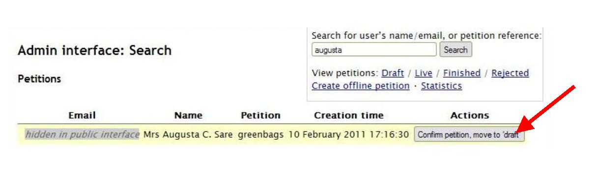

Finding an unconfirmed petition, and confirming it manually
Once a petition creator has created a petition on the website then they are sent a confirmation email. Until they click the link in the confirmation email confirming that they wish to petition the council, their petition does not appear in the list of Draft petitions in the admin interface.
This is because most unconfirmed petitions are unconfirmed precisely because the petition creator has decided not to continue with the petition. There is therefore no point in showing these petitions in the list of Draft petitions and cluttering up the admin interface.
However, it is still possible to search for unconfirmed petitions, by searching on the petition creator’s name or email address, or petition reference (i.e., the short name) for the petition in question. You may need to do this if a petition creator says that they did not receive the confirmation email, or if they are having trouble with the link.
Note that the search results that you are given will show only the email address, name, short name and creation time for the petition.
If you wish to confirm the petition on behalf of the petition creator, then click the ‘Confirm petition, move to ‘draft’’ button. Note that this does not approve a petition or put it live on the site, it merely moves it into ‘Draft’ status, as if the petition creator had clicked on the link in the confirmation email.
This will leave a log under ‘Administrator events and notes’ on the admin page for that petition which states that Admin confirmed the petition.
The petition is now ready to be approved or rejected.
If you confirm a petition accidentally then you can simply reject it, following the Rejecting a Petition process.
NOTE: IF A PETITION CREATOR HAS SPELT THEIR EMAIL ADDRESS INCORRECTLY, THEN THEY WILL NOT APPEAR IN THE DATABASE AT ALL, REGARDLESS OF WHAT YOU SEARCH UNDER. Therefore if you cannot find a record for someone, please ask them to resubmit their petition, ensuring that they have no made any typoes or errors in their email address.